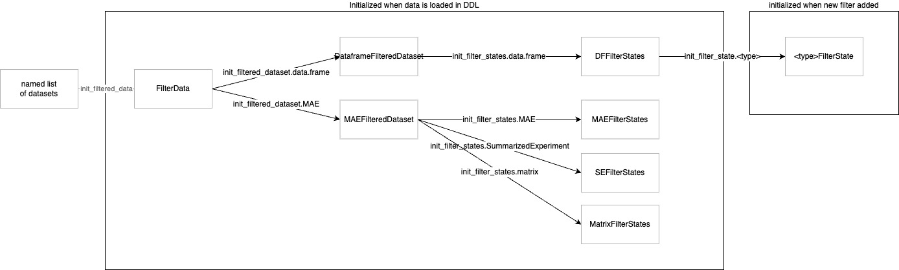
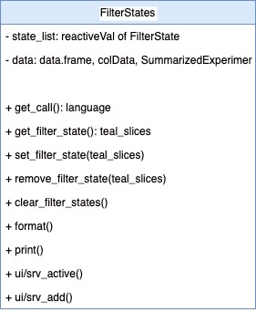

Filter panel for NEST developers
Dawid Kałędkowski
8/11/2021
filter-panel.RmdNOTE - the text and diagrams in this vignette are slightly out of date and will be updated shortly.
The key changes not yet incorporated: 1) There is no longer a
CDISCFilteredDataset object all data.frame are
DefaultFilteredDataset now. 2) FilteredDataset
no longer contains reactive data this is stored inside
FilteredData instead. 3) It is also possible to create a
FilteredData object directly from a list of data.frames
without create a TealData object see
help(init_filtered_data) for more details. 4)
FilteredData$private$keys is now a JoinKeys
object instead of a nested list.
Overview
Filter panel is located in the right side of the teal apps and is
responsible for filtering data globally for the whole application.
Filter panel is entirely encapsulated within FilteredData
class, which manages filter states, data filtering and reproducible
filter code. Filter panel is composed of several classes but
FilteredData is the only class which the app developer will
face directly. FilteredData is accessible in teal modules
as a dataset argument.

FilteredData contains one-to-many
FilteredDataset objects which contain
TealDataset passed from TealData after all
datasets are loaded. While FilteredData manages whole
filter panel, FilteredDataset is responsible for single
dataset filtering. Depending on a variant of
FilteredDataset it can contain one or many
FilterStates. FilterStates class object has
one or two ReactiveQueue where FilterState
objects are stored. FilterState is a single filter applied
to one variable/column while FilterStates is a collection
of filters combined within single filter call.
Initialization

FilteredData is initialized in srv_teal
when TealData$is_pulled() returns TRUE.
FilteredData is dispatched on type of
TealData, and if DDL is CDISCTealData then
CDISCFilteredData is initialized. Each
TealDataset from CDISCTealData determines the
type of the FilteredDataset. In the above diagram
CDISCTealDataset initializes
CDISCFilteredDataset and MAETealDataset
initializes MAEFilteredDataset. The most complicated
concept in the new filter panel is FilterStates, which are
initialized in FilteredDataset. The type and number of
FilterStates depends on the data kept in the
FilteredDataset. You can imagine FilterStates
as one subset call. The case of data.frame
(DFFilteredDataset) is simple, because we know that single
dplyr::filter call is sufficient to subset data rows.
Consider MultiAssayExperiment object which contains
patients data in @colData and multiple experiments in
@ExperimentList. Because MultiAssayExperiment
contains multiple objects and each must be filtered by a separate call,
this is why multiple FilterStates objects are required for
MAEFilteredDataset. ReactiveQueue are created
within FilterStates and their number also depends on the
FilterStates type. Described objects are created instantly
when data is loaded and they remain unchanged, whereas
FilterState is initialized each time when the new filter is
added. Values of the FilterState can change and also it can
be removed and added once again.
Classes description
This section describes in detail each class managing filter panel.
FilteredData

FilteredData is exposed to the apps/modules developer as
a dataset argument in the modules.
FilteredData manages filter panel by returning filtered
data, combining reproducible filter calls from
FilteredDatasets. FilteredData also contains
all shiny modules displayed on the right panel in teal apps.
FilteredData is a single object which is initialized in
srv_teal module and its variant depends on
TealData. If DDL returns CDISCTealData then
CDISCFilteredData is initialized, otherwise
FilteredData.
In the analytical modules datasets can be used to:
- obtain filtered and unfiltered data using
datasets$get_data(<dataname>, filtered = <TRUE/FALSE>). - get available datanames using
datasets$datanames() - get reproducible filter call using
datasets$get_call(<dataname>) - get reproducible data loading call
datasets$get_code(<dataname>) - get
JoinKeysbetween two datasets usingdatasets$get_join_keys(<dataname1>, <dataname2>) - get variable labels using
datasets$get_varlabels(<dataname>) - get parent dataset name using
datasets$get_parentname(<dataname>)(only in case ofCDISCFilteredData)
FilteredDataset
FilteredDataset is a class which keeps unfiltered data
and returns filtered data based on the filter call derived from
FilterStates. FilteredDataset class objects
are initialized by FilteredData, one for each
TealDataset. FilteredDataset contains single
TealDataset object and one-to-many
FilterStates depending on the type of object.
FilteredDataset stores dataset attributes, joins keys to
other datasets, and also combines and executes the code taken from
FilterStates.
Following FilteredDataset derived classes are already
implemented:
-
DefaultFilteredDatasetdispatched byTealDatasetto manage filters fordata.frameobject. -
CDISCFilteredDatasetdispatched byCDISCTealDatasetto manage filters fordata.framematching ADAM standards. -
MAEFilteredDatasetdispatched byMAETealDatasetto manage filters forMultiAssayExperimentobject.
FilterStates

FilterStates are initialized by the
FilteredDataset when teal app starts. The type and number
of FilterStates depends on the type of data included in
TealDataset. If data in FilteredDataset is
composed of multiple objects then the equivalent number of
FilterStates is initialized. One FilterStates
object is responsible to make one subset call. Consider the case of
MultiAssayExperiment object which contains multiple
experiments and patients data stored in separate slots. Each of the
objects within MultiAssayExperiment can be filtered by
separate calls. Each sub-element in TealDataset needs also
separate inputs to select subset variables, which then should be applied
to the same sub-element of the TealDataset.
Currently following variants are possible:
-
DFFilterStatesdispatched bydata.frame, usesdata.framecolumns for filtering. -
MAEFilterStatesdispatched byMultiAssayExperiment, uses columns of object kept in@colDataslot for filtering. -
SEFilterStatesdispatched bySummarizedExperiment, uses columns of objects kept in@colDataand@rowDatafor filtering. -
MatrixFilterStatesdispatched bymatrix, usesmatrixcolumns for filtering.
FilterStates serves two Shiny related purposes:
-
ui/srv_add_filter_stateallow to addFilterStatefor selected variable. Variables included in the module are the filterable colnames of the provided dataset. Variable selection addsFilterStatetoReactiveQueue(stored in listprivate$queue[[queue_id]]).FilterStateis dispatched automatically on a selected column class.
FilterState
This class controls single filter card and returns condition call
depending on what is selected. FilterState is initialized
each time when a user selects filter variable in
FilterState$add_filter_variable module.
FilterState is dispatched based on the type of the selected
variable. Depending on the type of the filter state, there are different
UI inputs - for example only numeric has use_inf checkbox
button. private$selected, private$use_na,
private$use_inf are reactive values and they trigger
re-execution of FilterState$get_call whenever their values
change. The constructor of FilterState has
extract_type argument which impacts returned call.
extract_type can be unspecified, "matrix" or
"list" and its value corresponds to the type of the
variable prefix in the returned condition call. For example if
FilterState is initialized with
extract_type = "matrix" then the variable in the condition
call looks like
<input_dataname>[, "<varname>"].
Making reproducible filter call
Overview
Above diagram presents the filter panel classes and their responsibilities when composing filter calls.
-
FilterState$get_call()returns a single condition call based on single variable -
ReactiveQueueis a container which stores multiple condition calls.ReactiveQueueobjects are kept in a list where the names of elements are set after the argument names. -
FilterStates$get_call()returns a single filter call by gathering conditions returned fromFilterStateand combining them by&operator grouped by argument name. -
FilteredDataset$get_call()returns the list of calls taken fromFilterStatesobject(s). -
FilteredData$get_call(<dataname>)returns the list of calls from specifiedFilteredDataset.
Example

Calling datasets$get_call(<dataname>) in teal
modules executes a chain of calls in all filter panel classes. Consider
a scenario in which:
FilteredDatahas threeFilteredDataset(s) ADSL , ADTTE, MAECDISCFilteredDatasetcontainsdata.frame(ADSL) which can be filtered only in one way executing singledplyr::filtercall (this is whyCDISCFilteredDatasethas a singleFilterStates)FilterStatesconstructdplyr::filtercall is based on theFilterStateobjects added to theReactiveQueue.ReactiveQueueis just a class to manage addition, storage and removal ofFilterStatesobjects. This is its only responsibility and the class does not generate any code.DFFilterStatecontains only oneReactiveQueuewhich is not named - this tellsFilterStatethat calls from eachFilterStateshould go to unnamed argument indplyr::filter.When the end-user chooses some variable in “Add Filter Variable” section, then new
FilterStateis added to theReactiveQueueand this new condition is added todplyr::filter(ADSL, ...)call. In the exampleSEXandAGEhas been added - which are automatically dispatched to relevantFilterStateclass (ChoiceFilterStateandRangeFilterState). Since (5) have been added or changed, conditions (SEX == "F"andAGE >= 20 & AGE <= 60) are returned to theDFFilterStates(3) which combines them with&operator and puts todplyr::filtercall.CDISCFilteredDatasettakes this one call and return toFilteredDataas a list.Second
FilteredDatasetforADTTEworks the same way asADSLwith one difference.dplyr::filterforADTTEis followed by the merge call withFILTERED_ADSL- to be filtered by keys available parent.FilteredDatasetMAEis based onMAETealDatasetwhereraw_datacontains multiple objects which can be filtered on. In generalMultiAssayExperimentcontainscolData(MAE)which is aDataFramewith ADSL-like patient data.MAEcontains also multiple experiments which can be extracted usingMAE[["experiment name"]]and they can also be filtered in filter-panel. This means thatFilteredDatasetMAEhas multipleFilterStatesobjects: one for subjects data and one for each experiment.MAEFilterStatesobject is initialized for subjects data and for this objectSummarizedExperiment::subsetByColDatafunction is applied.SummarizedExperiment::subsetByColDatahas two argumentsx(data) andy(conditions).MAEFilterStatessimilar toDFFilterStateshas oneReactiveQueue(9) list foryargument in the function. Adding newFilterStatestriggers returning of the code similar to (4) and (5)SEFilterStatesis initialized per one experiment in the MAE data. This class is specific becauseSummarizedExperimentcontainscolDataandrowDatawhich correspond toselectandsubsetarguments insubset.SummarizedExperimentfunction. Similar tosubset.data.framesubsetrefers to the rows in the object, andselectrefers to the columns - but the call execution is little different because subsetting and selecting call refers to columns incolDataandrowData(objects attached to this experiment).
Filter-panel API
All of filter-panel classes have dedicated methods to set and get
current filter state. These methods include: -
get_filter_state - set_filter_state -
remove_filter_state - clear_filter_states
Setting and getting filter-panel states are done through a nested
list which follows a specific pattern. The structure of the list should
reflect the address of FilterState(s) object. By default
(data.frame), the structure will follow the pattern shown
in the code below, with a list element for each variable from each
dataset. In case of MultiAssayExperiment objects, the
situation looks different, because these datasets have a multiple
objects inside, so the list needs to refer to the object one wants to
set/get filter from.
dataset-1: #data.frame
variable-1:
selected: [<selected>]
keep_na: <keep_na>
...
dataset-n: # MAE
subjects:
variable-1:
selected: [<selected>]
keep_na: <keep_na>
...
experiment-1:
subset:
variable-1:
selected: [<selected>]
keep_na: <keep_na>
...
select:
variable-2:
selected: [<selected>]
keep_na: <keep_na>
...
...The above list structure is applied in get_filter_state,
set_filter_state and remove_filter_state. In
the example below, we present how these methods can be used.
- Setting the filter state
library(teal.slice)
datasets <- init_filtered_data(
list(
iris = list(dataset = iris),
mtcars = list(dataset = mtcars)
)
)
set_filter_state(
datasets = datasets,
filter = list(
iris = list(Species = list(selected = "virginica", keep_na = FALSE)),
mtcars = list(mpg = list(selected = c(20.0, 25.0), keep_na = FALSE, keep_inf = FALSE))
)
)- Getting the filter state
get_filter_state(datasets)## $iris
## $iris$Species
## $iris$Species$selected
## [1] "virginica"
##
## $iris$Species$keep_na
## [1] FALSE
##
##
##
## $mtcars
## $mtcars$mpg
## $mtcars$mpg$selected
## [1] 20 25
##
## $mtcars$mpg$keep_na
## [1] FALSE
##
## $mtcars$mpg$keep_inf
## [1] FALSE
##
##
##
## attr(,"formatted")
## [1] "Filters for dataset: iris\n Filtering on: Species\n Selected values: virginica\n Include missing values: FALSE\nFilters for dataset: mtcars\n Filtering on: mpg\n Selected range: 20.000 - 25.000\n Include missing values: FALSE"- Removing filter states
remove_filter_state(
datasets = datasets,
filter = list(iris = c("Species"))
)- Updating filter states. *Works only in the shiny reactive context.
set_filter_state(
datasets = datasets,
filter = list(
mtcars = list(mpg = list(selected = c(22.0, 25.0)))
)
)- Clear the filter state
clear_filter_states(datasets)The above code can be also used in the modules. In the example below filter-panel states are changed when clicking the buttons in the encoding-panel.
library(shiny)
datasets <- init_filtered_data(
list(
iris = list(dataset = iris),
mtcars = list(dataset = mtcars)
)
)
app <- shinyApp(
ui = fluidPage(
fluidRow(
column(
width = 9,
id = "teal_primary_col",
shiny::tagList(
actionButton("add_species_filter", "Set iris$Species filter"),
actionButton("remove_species_filter", "Remove iris$Species filter"),
actionButton("remove_all_filters", "Remove all filters"),
verbatimTextOutput("rcode"),
verbatimTextOutput("filter_state")
)
),
column(
width = 3,
id = "teal_secondary_col",
datasets$ui_filter_panel("filter_panel")
)
)
),
server = function(input, output, session) {
datasets$srv_filter_panel("filter_panel")
output$filter_state <- renderPrint(get_filter_state(datasets))
output$rcode <- renderText(
paste(
sapply(c("iris", "mtcars"), datasets$get_call),
collapse = "\n"
)
)
observeEvent(input$add_species_filter, {
set_filter_state(
datasets,
list(iris = list(Species = list(selected = c("setosa", "versicolor"))))
)
})
observeEvent(input$remove_species_filter, {
states <- get_filter_state(datasets)
if (!is.null(states$iris$Species)) {
remove_filter_state(datasets, list(iris = "Species"))
}
})
observeEvent(input$remove_all_filters, clear_filter_states(datasets))
}
)
if (interactive()) {
runApp(app)
}